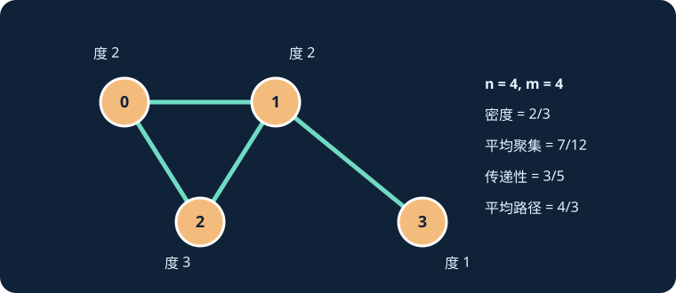

NETWORK MEASURES / STRUCTURAL STATISTICS
一张网络不能只用“很密”或“很复杂”来描述；结构比较需要可复算的指标。
先明确测量对象
设 G=(V,E) 是一张简单无向图，节点数为 n=|V|，边数为 m=|E|。网络指标把结构映射成数字，便于比较不同网络或同一网络在不同时刻的变化。但一个指标只刻画某个侧面：平均度相同的两张图，可能有完全不同的社团结构、路径长度和节点异质性。可靠分析通常需要一组互补指标，而不是寻找一个“总分”。

度与度分布：连接集中在哪里？
节点 v 的度数 kᵥ 是与它相连的边数。平均度是所有节点度数的算术平均。握手定理给出 。度分布 P(k) 则表示随机抽取一个节点，其度数等于 k 的比例或概率。
平均度回答“平均每个节点连几条边”，却不回答“边是否集中在少数节点”。例如，所有节点度数都接近 4，与少数节点度数达到几百、其余节点只有 1 条边的网络，可能拥有相近的平均度，却具有不同的异质性和脆弱性。
密度：相对于最多可能的边有多稠密？
简单无向图中，n 个节点最多有 n(n−1)/2 条边，因此网络密度为：
简单有向图（不含自环）最多有 n(n−1) 条有向边，密度为 m/[n(n−1)]。密度是相对量：一个有 100 个节点和 200 条边的图，与一个有 10 万个节点和 200 条边的图，密度完全不同。大多数真实网络是稀疏网络，节点数增长时平均度不一定同比增长。
路径与距离：节点之间隔着几步？
最短路径长度 d(u,v) 是 u 到 v 的最少边数。连通图的平均路径长度是所有有序节点对最短距离的平均；无向图的有序对写法与无序对写法得到相同平均值。直径是所有节点对最短距离的最大值。
不连通图中，不可达节点对的距离不是一个普通有限数值。因此计算平均路径长度时，必须先声明统计范围：可以只在最大连通分量（LCC）内计算，也可以只对可达节点对求平均并同时报告可达对比例。NetworkX 的 average_shortest_path_length 要求输入图连通；对不连通图直接调用会报错。若使用加权图，边权还必须表示距离或成本，而不是“越大越强”的联系强度。
聚集系数：邻居之间是否也彼此连接？
对度数至少为 2 的节点 v，局部聚集系数衡量 v 的邻居之间实际存在的边，占所有可能邻居边的比例。若 T(v) 是经过 v 的三角形数量，则
当 kᵥ 小于 2 时，常用约定是 Cᵥ=0。平均局部聚集系数是各节点 Cᵥ 的平均；全局传递性（transitivity）则是闭合三元组数占所有连通三元组的比例，常写成 3×三角形数 / 连通三元组数。二者权重方式不同，数值不必相等。
同一张图，不同的结构问题
度数描述单个节点的连接数量；度分布描述这些连接在全网如何分配。
手算一个四节点网络
考虑边集 {(0,1),(1,2),(2,0),(2,3)}。节点度数依次为 2、2、3、1，总度数为 8，等于 2m。密度为 2×4/[4×3]=2/3。节点 0 和 1 的邻居彼此相连，所以它们的局部聚集系数为 1；节点 2 的三个邻居中只有一对相连，所以其系数为 1/3；叶节点 3 的系数按约定为 0。
因此平均局部聚集系数为 7/12，而全局传递性为 3/5。四个节点对的最短距离分别为 1、1、2、1、2、1，平均路径长度为 4/3。这个例子说明：平均局部聚集系数与全局传递性回答的是不同问题。
运行环境：Python 3.10+；安装依赖：python -m pip install "networkx>=3.3,<4"。
import networkx as nx
G = nx.Graph([(0, 1), (1, 2), (2, 0), (2, 3)])
n, m = G.number_of_nodes(), G.number_of_edges()
lcc_nodes = max(nx.connected_components(G), key=len)
L = nx.average_shortest_path_length(G.subgraph(lcc_nodes))
print("度数:", dict(G.degree()))
print("平均度:", sum(dict(G.degree()).values()) / n)
print("密度:", nx.density(G))
print("平均局部聚集系数:", nx.average_clustering(G))
print("全局传递性:", nx.transitivity(G))
print("最大分量平均路径:", L)
assert nx.clustering(G, 2) == 1 / 3
assert nx.density(G) == 2 / 3
assert abs(L - 4 / 3) < 1e-12
读指标时不要越界解释
- 高平均度不等于高密度，二者受网络规模影响的方式不同。
- 短平均路径不代表每个人都能实际找到最短路径。
- 高聚集系数表示局部闭合较多，不直接证明存在明确社团。
- 不连通网络的路径指标必须说明计算范围与不可达节点对的处理方法。
参考资料
- Newman, M. E. J. (2010). Networks: An Introduction. Oxford University Press.
- NetworkX. clustering. Official documentation.
- NetworkX. average_clustering. Official documentation.
- NetworkX. average_shortest_path_length. Official documentation.